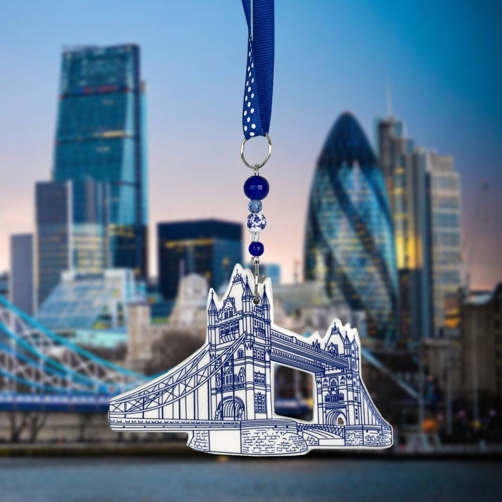
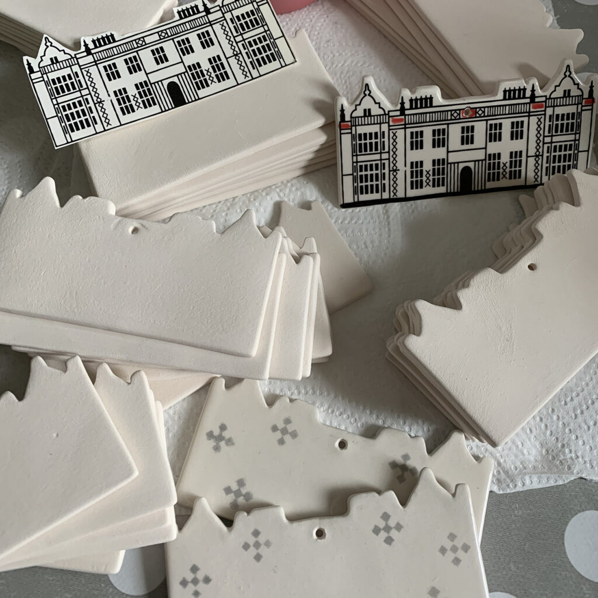
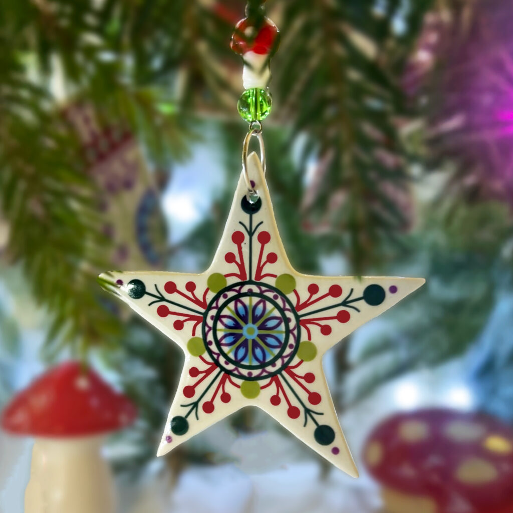
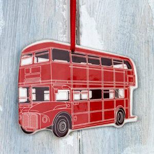
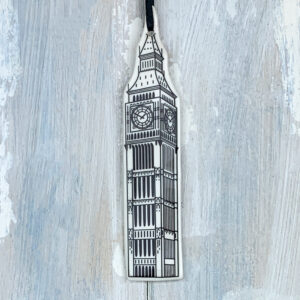
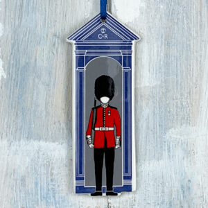
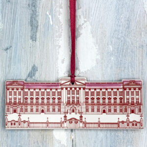
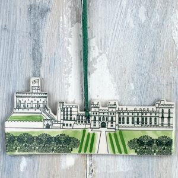

Ceramic decorations, handmade in UK
From festive favourites to bespoke pieces for cathedrals, castles and museums, every decoration begins as an original design and is finished by hand in our Berkshire studio
From festive favourites to bespoke pieces for cathedrals, castles and museums, every decoration begins as an original design and is finished by hand in our Berkshire studio
Browse seasonal and year-round collections through our Etsy shop, or explore our bespoke venue designs and where to find them
Seasonal favourites, year-round collections and thoughtful gifts — browse our collection online.
Browse the collectionOver 100 bespoke designs created for cathedrals, castles, museums and more — available exclusively through our partners
Explore bespokeFrom Christmas to flowers and seaside, explore collections designed to be kept, gifted and brought out year after year.
Over the years, we have created more than 100 bespoke hanging decorations for cathedrals, chapels, museums, castles and historic buildings across the UK and beyond.

From Tower Bridge to Buckingham Palace, our bespoke landmark decorations capture Britain's most treasured buildings in handcrafted ceramic. Each piece is individually handmade and available only at select venues.
Explore collection
Every decoration is individually shaped, decorated, glazed and assembled in our Berkshire studio. No mass production — just patient craftsmanship and a love for detail that's been our hallmark since 2006
Learn moreFollow along for studio updates, new designs, and behind-the-scenes glimpses.





